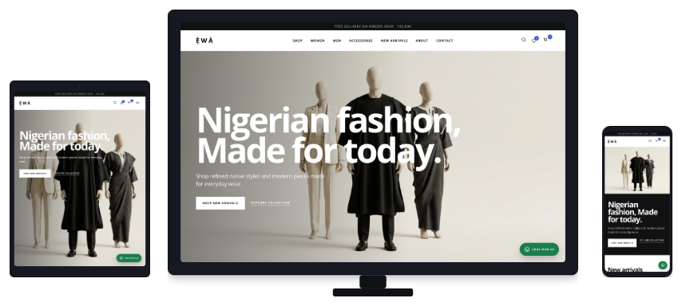
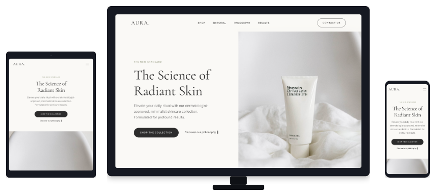

A business can have a website and still leave potential customers uncertain about what it does, whether it is credible or how to make contact. The difference is rarely one colour choice or a more expensive-looking homepage. It is whether the website does its job.
For a Nigerian SME, service business, startup or growing online store, a professional website should make the offer clear, work properly on a phone, answer the questions people ask before contacting you and give them an obvious next step. That is the standard worth aiming for.
What Makes a Business Website Professional?
Professionalism is wider than appearance. A polished logo and a few attractive images cannot fix vague messaging, hard-to-use navigation or a contact form that fails on mobile. A professional business website brings strategy, content, visual design, functionality and credibility together.
It should help a visitor quickly understand three things: what the business offers, why it may be a suitable choice and what to do next. It should also be practical for the business itself: easy to update, able to grow and built on a sound technical foundation.
9 Essential Things Every Professional Business Website Should Get Right
1. Clear messaging and positioning
Your homepage should not make people work out what you sell. State the service or product, who it is for and the problem it helps solve in plain language. A law firm, estate company, skincare brand and logistics provider do not need the same website, but each needs a clear first explanation.
Replace broad lines such as “we provide quality solutions” with useful specifics. A consulting firm can name the type of clients it supports. A construction company can show its services and completed work. An ecommerce brand can make the collection, delivery information and shopping route easy to find.
2. Professional visual design and consistent branding
Visual design affects how easy a website feels to use. Consistent type, colour, spacing and image treatment help visitors move through the page without distraction. The goal is not to make every section decorative. It is to make important information easy to notice and understand.
Your website should look like part of the same business customers see on your social profiles, proposal documents, packaging or physical location. Use real work, product photography or carefully chosen visuals where possible. Blurry images, copied graphics and mixed styles can weaken an otherwise strong offer.
3. Mobile-first responsive design
Many people will first meet a business through a phone. They may be checking a service, comparing suppliers, sending a WhatsApp message or browsing a product catalogue between other tasks. The mobile experience needs readable text, comfortable buttons, usable forms and navigation that does not get in the way.
Google uses the mobile version of a site for indexing and ranking, and recommends responsive design because it uses the same URL and content across devices. A professional site should therefore be tested on real phones, not only resized in a desktop browser.

4. Simple navigation and a useful user experience
A visitor should be able to find the information that affects their decision without opening five menus. For most service businesses, that usually means a clear path to services, relevant proof, about information and contact. For an online store, customers need clear categories, product details, delivery information and a straightforward checkout route.
Good user experience is often quiet. Labels make sense. Pages have a purpose. Important actions are close to the information that supports them. If customers regularly ask questions already answered on the website, or staff spend time directing people to basic information, the structure probably needs work.
5. Trust signals and credibility
Before someone sends an enquiry, pays for a product or shares their details, they will look for reasons to trust the business. Useful trust signals include a real business address where appropriate, clear phone and email details, current project examples, genuine testimonials with permission, team information, policies and accurate service descriptions.
Do not add proof simply to fill a section. A short, specific client comment is more useful than a row of anonymous praise. A case study that explains the work is more helpful than a gallery with no context. Credibility comes from clarity and consistency, not inflated claims.
6. Clear calls to action
Every important page needs a next step that fits the visitor’s intent. Someone reviewing a property listing may want to request an inspection. Someone reading about a service may want a quote, consultation or WhatsApp conversation. Someone comparing products may want to see the collection or add an item to cart.
Use direct labels such as “Request a quote”, “Book a consultation” or “View our work”. Put them where a visitor has enough information to act. A professional website does not pressure every reader; it removes uncertainty for the ones who are ready.
7. Search engine optimisation foundations
SEO-friendly website design gives search engines and people a clearer understanding of the page. It starts with useful content, descriptive page titles, logical headings, crawlable internal links, sensible URLs, image alt text and a structure that groups related information together.
These foundations do not guarantee a top ranking. Google’s SEO guidance is clear that there are no shortcuts that automatically put a page first. They do make it easier for search engines to crawl, index and understand the business. For deeper ongoing work, review Drey Studio’s SEO and AI search optimisation service.
8. Website speed, security and reliability
A website should load its important content without making visitors wait through large, unnecessary files or broken scripts. It should use HTTPS, keep forms working, handle images carefully and be checked after updates. Speed is part of the experience, especially for people on mobile connections.
Google’s Web Vitals guidance focuses on loading, responsiveness and visual stability. You do not need to chase a perfect score to make a better business website, but you should regularly test the pages that matter most: the homepage, service or product pages, contact routes and checkout where relevant.
9. Scalability and future growth
Businesses change. You may add a service, launch a product line, enter a new market, publish useful guides or need a better way to manage enquiries. A professional website should make normal growth possible without forcing a complete rebuild every few months.
That means deciding early who owns the domain and hosting, how content will be updated, what access the business receives and how future features will fit the platform. Read our guide to choosing a website developer in Nigeria before committing to a project.

Common Website Mistakes Nigerian Businesses Should Avoid
The most common mistake is treating a website as a visual announcement instead of a working business tool. A homepage can look polished and still leave customers confused about services, prices, delivery areas or how to get help.
- Designing for appearance alone: attractive layouts cannot replace clear pages, useful content and working contact routes.
- Using generic content: visitors need specific services, product details and reasons to trust the business.
- Neglecting mobile users: small text, difficult forms and hidden menus create friction at the point people are most likely to contact you.
- Hiding contact information: make phone, email, address and the preferred enquiry route easy to find.
- Using irrelevant imagery: use visuals that support the service or product rather than filling space with unrelated stock photos.
- Ignoring SEO and maintenance: publishing a website is the start of its working life, not the final task.
How to Know If Your Current Business Website Needs Improvement
Start with a simple review. Open the site on your phone and ask whether a new customer can answer the following without help:
- Can I quickly understand what this business does and who it serves?
- Can I use the menu, read the important content and complete a form on mobile?
- Can I contact the business through the route I prefer?
- Can I see current work, relevant proof or enough detail to trust the business?
- Can I find the service or product page that matches my need?
- Does the website support the business goal, whether that is enquiries, bookings, product sales or information requests?
If several answers are no, do not rush into a visual redesign. Start by diagnosing the issue. It may be a content update, mobile fix, clearer enquiry path or a larger rebuild. Our article on signs that a business website needs a redesign can help you make that distinction.
Professional Website Design Is an Investment in Your Business
A business website can support better decisions before a customer contacts you. It can explain the offer, answer common questions, present proof, direct people to the right service and make the next step less awkward. That is useful whether you are launching a startup, improving an established service business or building an ecommerce operation.
The return is not automatic. Traffic quality, pricing, sales follow-up and the strength of the offer still matter. But a website that is clear, credible and easy to use gives those other efforts a better place to land. If you are budgeting for a new site, see our guides to website costs in Nigeria and ecommerce website costs in Nigeria.
Frequently asked questions
What makes a website look professional?
Clear messaging, consistent visual design, useful content, simple navigation, mobile-friendly layouts, credible contact details and an obvious next step all contribute to a professional website.
Why does a Nigerian business need a professional website?
It gives prospective customers a reliable place to understand the business, assess its offer, check its credibility and make contact when they are ready.
How important is mobile responsiveness for a business website?
It is essential. Customers often research and contact businesses from a phone, and Google uses the mobile version of a site for indexing and ranking.
Does professional website design help with SEO?
It can support SEO through clear structure, useful content, responsive layouts, crawlable links and technical foundations. It cannot guarantee rankings.
What pages should a professional business website have?
Most businesses need a focused homepage, clear service or product pages, an about or credibility page, a contact route and relevant proof. The exact page mix depends on the business.
How can I tell if my website needs a redesign?
Review the message, mobile experience, contact route, current proof and business fit. Several connected weaknesses can point to a redesign; one isolated issue may need a focused fix.
Can a professional website help generate business enquiries?
It can make enquiries easier by giving the right information, building confidence and presenting clear contact routes. Enquiry volume also depends on traffic quality, offer, pricing and follow-up.